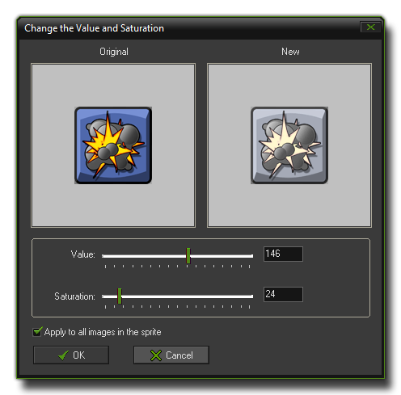
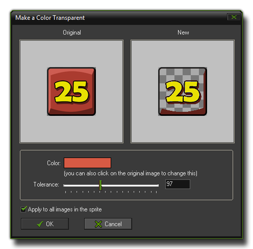
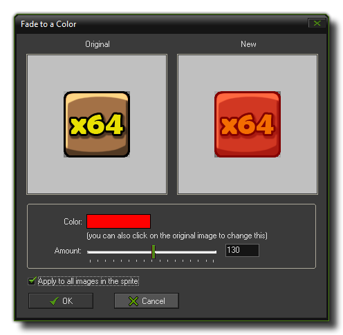
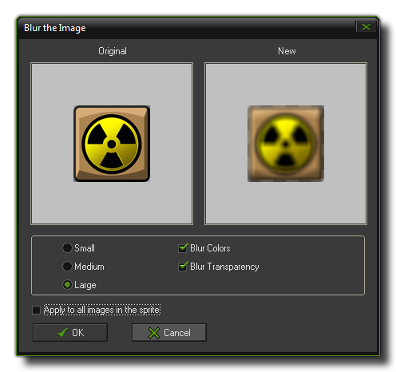
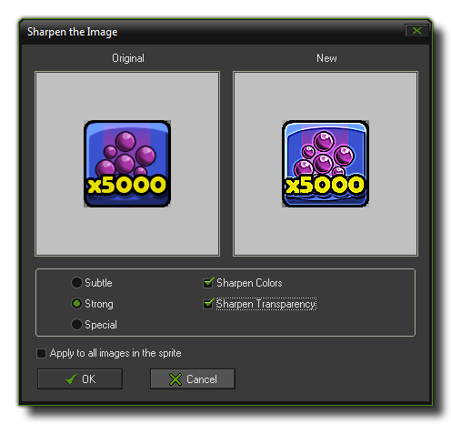
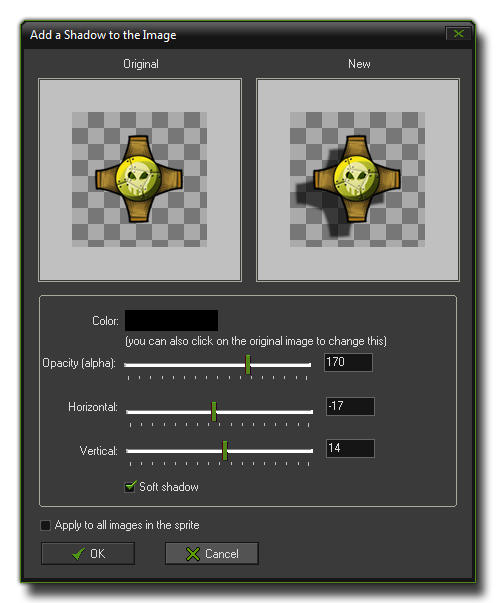

The Sprite Editor Images Menu
This section explains the functions associated with the GameMaker:Studio sprite editor "Image" drop down menu.
 The "Images" drop down menu offers a number of handy options to change the colors, transparencies and other details of the sub-images of your sprite. If you use these commands from the actual sub-image editor then the options
chosen will only be applied to the currently selected sub-image, however if you use these commands from the sprite editor they can be applied to all sub-images by ticking the appropriate check-box.
The "Images" drop down menu offers a number of handy options to change the colors, transparencies and other details of the sub-images of your sprite. If you use these commands from the actual sub-image editor then the options
chosen will only be applied to the currently selected sub-image, however if you use these commands from the sprite editor they can be applied to all sub-images by ticking the appropriate check-box.
- Cycle Left and Cycle Right : Cycles all images one place to the left or to the right, so that the order of the sprite animation is changed.
- Greyscale : Converts the image (or images) into greyscale.

- Colorize : Here you can change the color (hue) of the image(s). There is a slider which you can use as well as an input box to directly input a new value. The normal effect is to colorize the image(s) with the
selected hue, but when you mark the "shift hue" check-box, the original colors are shifted over the amount indicated giving some rather interesting effects.
 （官方文档无此图片）
（官方文档无此图片）
- Colorize Partial : Here you can change the color (hue) of part of the image(s). You use the top slider (or the input box) to select the new color you wish, then change the second slider (or input box) to select the
color you wish to change (or click the left image on the color). The tolerance slider changes the dynamic range to be changed, from a very narrow selection to a very broad selection, meaning that you can single out specific colors
or whole ranges to change.
 （官方文档无此图片）
（官方文档无此图片） - Intensity : Here you can change the intensity (luminosity) and saturation (amount of color) in the selected image(s).

- Invert : Inverts the colors in the image(s).

- Make Opaque : Remove all transparency information from the image(s), making them opaque.

- Erase a Color : You can select a color to erase with this either by clicking on the color box or by clicking somewhere in the left image. You then specify the tolerance with a slider to set the "range" of
pixels to be included in the action. All pixels with a color close the selected color and within the tolerance level will be made transparent.

- Smooth Edges : This will smooth the edges around the opaque part of the image(s) to make them look nicer. Should you require a stronger effect, this can be achieved using Blur (see below) but only
selecting to blur the transparency.

- Opacity : Here you can change the opacity (transparency) for the whole image (or images). You can either set it relative to the current opacity, meaning that it will be added/subtracted from the existing
transparency values, or absolute so that the existing transparencies are over-written by the new value. Note that fully transparent pixels always stay fully transparent.

- Set Alpha from File : This is a very interesting function that takes the luminosity values from a file and applies them to the alpha channel (transparency) of the image. These values are calculated based on
how light or dark each pixel is, with white being fully opaque, black being fully transparent and everything else somewhere in the middle. The ideal images to use are those that have no color information and are purely
greyscale, and it should be the same size as the target sub-image(s) of the sprite (however, if it is larger or smaller it will be scaled to fit). The image below illustrates how it works :

- Fade : Here you specify a color and an amount and the pixels in the image(s) are now faded towards this color with the given amount.

- Blur : This option can be used to blur the image(s). There are options to choose the quantity of blur to be used as well as to select whether you wish to blur just the color information, the transparencies or
both. Only blurring the transparency values can be a nice way to smooth the boundary of the image(s).

- Sharpen : This option can be used to sharpen certain details within an image (or images). This is sort of the reverse of blurring as sharpening enhances the edges of the image, with you choosing how subtle or strong
you wish the effect to be and whether to sharpen the transparent edges only, the colored edges only or both. The special sharpening puts additional emphasis on details and can leading to an interesting effect.

- Outline : You can use this command to create an outline around the image(s). You are asked for the color and a thickness of the outline, as well as whether to position it inside the image or not. You can also indicate
that you wish to remove the image(s) as well, leaving only the outline itself. Finally, there is an option to smooth the outline, which lightly blurs the edges to give it a more rounded feel.

- Shadow : This command will create a "drop" shadow below the image(s). The available options permit you to select the color of the shadow and the position, as well as the alpha (transparency) and whether you
wish the edges of the shadow to be hard or soft (blurred or not).

- Glow : Create a colored glow around the image, where you can indicate the color of the glow, the opacity and the thickness. You can also indicate to place the glow inside the image.
Only available in the Standard Edition.

- Buttonize : Turn the image(s) into a button. You specify the color of the button and the opacity of the effect. You must also indicate the thickness of the button boundary and whether it should be smooth or not, with a
smooth button having a much more rounded look to it.

- Gradient Fill : Adds a gradient fill to the image(s). You can specify the two colors to create the gradient between, the overall opacity and the type of gradient to use. Default the image is replace by the gradient although
the transparency is maintained, but by un-checking the "Replace" box the gradient is blended onto the image. By checking the "Change Transparency" box the alpha value of the original image is changed as well.

Back : Editing Sprites